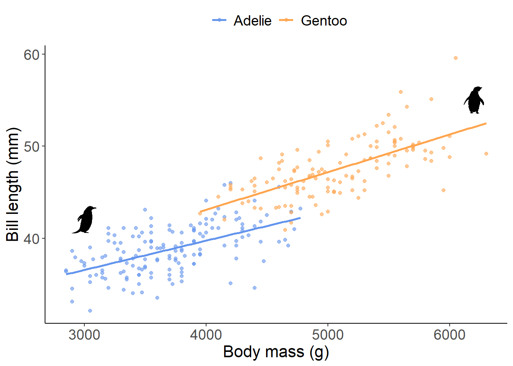
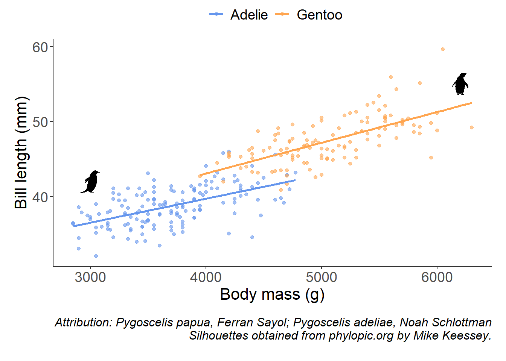

Include attributions of phylopic silhouettes in the caption of a plot
ggplot2
rphylopic
silhouettes
Author
Gabriela Palomo-Munoz
Published
September 18, 2023
The rphylopic package
I explained a little of what phylopic and the rphylopic package are here. I wanted to continue this series with explaining how to use this versatile package but this time creating a workflow to include the attribution of several silhouettes in the caption of a figure created using ggplot2.
The problem
The rphylopic package has a function to retrieve the attribution information from a silhouette: get_attribution(uuid=uuid). However, if you have several silhouettes you might want to automate the code to retrieve all the attributions in one step instead of for each silhouette. I came up with this workflow, which I hope will be useful to some:
Base plot using ggplot2
Let’s start by creating a simple plot to use as an example.
Now that we have the basic plot let’s work on finding out which silhouettes we want to use. Sometimes a species may have more than one silhouette so we have to identify which specific silhouette we want and retrieve that specific uuid.
The species
## Let's get the uuid numbers for our species of interest gentoo <-c('Pygoscelis papua')adelie <-c('Pygoscelis adeliae')# For example, the gentoo penguin has two silhouettes, let's select the# second one. Notice that you have to make the selection in the console.# The silhouettes appear in the plots panel.#pick_phylopic(gentoo) # 2 silhouettes #pick_phylopic(adelie) # 1 silhouette
# Now let's get the uuid for each species, notice that we have to # indicate the number of available silhouettes using n and # the one we choose using square bracketsgp <-get_uuid('Pygoscelis papua', n=2)[2]ap <-get_uuid('Pygoscelis adeliae')## Let's put the silhouettes that we will use in the environmentgent <-get_phylopic(gp)adel <-get_phylopic(ap)## Now we add the silhouettes to our basic plot plot1+add_phylopic(img = gent, x=3000, y=42, ysize=3)+add_phylopic(img = adel, x=6200, y=55, ysize =3)->plot1plot1

Now we add the attribution in the caption of the plot
Now that we have the basic plot, we want to add the attribution programmatically so we don’t have to retrieve the information of each silhouette one by one. We want to be able to add the attribution easily.
## Let's create a list with the species we had already defined earlierspp <-list(gentoo = gentoo, adelie = adelie)## Now let's put the uuid of all our species in a list uuid_list <-list(gentoo = gp, adelie = ap) ## We create an empty list where we will put the attributions of each species att_cont <-vector('list', length =length(spp))names(att_cont) <-names(uuid_list)# Now the contributor. You might select to include more fields, but I only used contributor. Check other fields available using the $for (i in1:length(spp)){ att_cont[[i]] <-get_attribution(uuid = uuid_list[[i]]) att_cont[[i]] <-paste0(spp[[i]], ', ', att_cont[[i]]$contributor)}#Now let's collapse species and contributors into one single stringsp_att <-paste(unlist(att_cont), collapse='; ')# Notice that we are using \n to indicate a break in lineplot1+## Notice that I am including the theme for the caption here!! theme(plot.caption=element_text(face='italic', size =12, vjust =-3), plot.margin =margin(0, 0.5, 1, 0.5, 'cm'))+labs(caption =paste0('Attribution: ', sp_att, '\n Silhouettes obtained from phylopic.org by Mike Keessey.')) ->plot_captionplot_caption

Long captions
Using the package cowplot you can also add a caption with the info we saved in the sp_att object.
library(cowplot)## Let's add a subtitle using cowplot ggdraw(add_sub(plot1,size=12, fontface ='italic',color='gray20',x =1, hjust =1, # right aligned paste0('Attribution: ', sp_att, '\n Silhouettes obtained from phylopic.org by Mike Keessey.')))
Cite rphylopic in your manuscript or work:
citation('rphylopic')
To cite rphylopic in publications, use the following citation:
Gearty, W. and Jones, L.A., 2023. rphylopic: An R package for
fetching, transforming, and visualising PhyloPic silhouettes.
bioRxiv. doi: 10.1101/2023.06.22.546191.
A BibTeX entry for LaTeX users is
@Article{,
title = {rphylopic: An R package for fetching, transforming, and visualising PhyloPic silhouettes},
author = {William Gearty and Lewis A. Jones},
year = {2023},
journal = {bioRxiv},
doi = {10.1101/2023.06.22.546191},
}
And that’s it, that’s all I have for you. If you have any questions don’t hesitate to contact me.